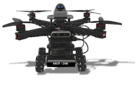

AeroBOT-ZNB “翼定行”陆空两栖智能机器人
面向高校人工智能、机器人、无人机与智能控制相关专业的全开放陆空两栖机器人教学科研平台。

产品概述
“翼定行”陆空两栖智能机器人是万创鑫诚推出的多功能智能机器人产品，集四旋翼飞行系统、四轮全向地面运动系统、智能控制系统与多传感器感知系统于一体，可在陆地与空中两种模式下自主运行。
该平台面向高校人工智能、机器人、无人机、自动控制等相关专业，可用于开展教学实践、科研验证、创新竞赛和综合实训，是一款兼具开放性、扩展性和工程实践价值的智能机器人平台。
核心能力
支持陆地移动与空中飞行双模式快速切换，既可完成地面巡航、路径规划、避障控制等任务，也可开展无人机飞行控制、空地协同和复杂场景任务实验。
机器人搭载人工智能控制器、3D 激光雷达、深度立体相机、对地摄像头等多种传感器，可实现实时定位、环境感知、目标识别、路径规划与自主决策。
基于 ROS 智能控制软件体系，支持多传感器融合、感知算法、学习算法和运动控制算法开发，便于师生开展从基础控制到智能决策的完整实践训练。
产品特点
陆空双模式转换，兼具地面移动机器人与智能无人机的综合功能。
支持室内、室外多场景应用，3D 激光雷达定位能力强，具备较好的抗干扰能力。
软件全开源，支持二次开发，并提供终身免费升级服务。
可配套竞赛、教学、科研等技术支持与项目指导，满足多层次实训建设需求。
基本配置参数
3D 演示
教学价值
AeroBOT-ZNB 可覆盖机器人原理、无人机控制、智能感知、SLAM 定位导航、路径规划、目标识别、嵌入式系统、ROS 开发、多传感器融合与人工智能算法应用等课程内容。
通过一套平台即可完成从地面移动机器人到空中无人机、从基础运动控制到智能自主决策的综合教学，适合建设人工智能与机器人综合实训室、无人系统创新实验室及低空经济相关教学平台。
适用场景
适用于高校及职业院校人工智能、机器人、无人机、自动化、智能制造、电子信息等专业的课程教学、综合实训、毕业设计、科研创新与竞赛训练。
也可用于陆空协同机器人、无人系统控制、多传感器融合感知、智能导航与低空经济应用方向的实验研究。